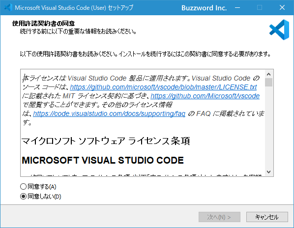

Visual Studio Codeのダウンロードとインストール
Visual Studio Code のダウンロードとインストール方法について解説します。2020年12月現在、最新のバージョンは Visual Studio Code Version 1.52 となっています。
Visual Studio Codeをダウンロードする
Visual Studio Code のダウンロードから行います。下記の URL へアクセスして下さい。
・https://code.visualstudio.com/
画面左側にご利用の環境向けのダウンロード用ボタンが表示されています(今回の場合は Download for Windows)。通常はこのボタンをクリックして頂ければいいですが、インストーラーの有無などを選択されたい場合は「Other platforms」と書かれたリンクをクリックしてください。
OS 毎のダウンロード用リンクが掲載されたページが表示されます。
今回は Windows 10 64bit 環境へのインストールなので、 Windows の列にある User Installer の行の 64bit をクリックします。
次のような画面が表示されて Visual Studio Code のダウンロードが開始されます。任意の場所に保存しておいて下さい。ダウンロードは以上で終了です。
Visual Studio Codeをインストールする
続いてインストールを行います。ダウンロードしたファイルをダブルクリックするとインストーラーが起動してインストールが開始されます。最初に次のような画面が表示されます。

「使用許諾契約書」が表示されています。よく読んで頂き同意できる場合には「同意する」を選択し、そのあとで「次へ」をクリックしてください。
インストール先ディレクトリの選択画面です。デフォルトで設定されている場所でよろしければ「次へ」をクリックしてください。別の場所に変更する場合は「参照」をクリックしてインストール場所を選択したあとで「次へ」をクリックしてください。(下記はインストール場所を変更してあります)。
Windows のスタートメニューに Visual Stddio Code のメニューを追加するかどうかの選択画面です。追加する場合は「次へ」をクリックしてください。追加する必要がない場合は「スタートメニューフォルダを作成しない」をクリックしてください。
追加の設定画面です。デフォルトでは「PATHへの追加」のみチェックが入っています。必要であれば他の項目にもチェックを行ってください。今回はデフォルトのままとしました。設定が終わりましたら「次へ」をクリックしてください。
最終確認画面です。インストールしてよければ「インストール」をクリックしてください。
次の画面が表示されればインストールは完了です。
「完了」をクリックしてインストールを終了して下さい。
ファイル構成
Visual Studio Code のインストール後にインストールを行ったディレクトリを開いているみると次のようなファイルが格納されています。
Visual Studio Code をスタートメニューから起動するときに実行されるのが Code.exe ファイルです。手動で PATH を設定する場合は bin ディレクトリに対して設定してください。(自動で設定した場合も bin ディレクトリに対して設定されます)。
Insiders Editionをインストールする
Visual Studio Code には安定版である Stable 版の他に Insiders 版が用意されています。 Insiders 版では新しい機能などを先に試すことができるバージョンです。 Insiders 版をインストールするには Visual Studio Code のホーム画面で「Insiders Edition」と書かれたリンクをクリックしてください。
現在の環境向けの Insiders 版 Visual Studio Code のダウンロードページが表示されます。
あとの手順は Stable 版の場合と同じです。ダウンロードを行ったあとでインストールを行ってください。
-- --
Visual Studio Code のダウンロードとインストール方法について解説しました。
( Written by Tatsuo Ikura )

著者 / TATSUO IKURA
初心者～中級者の方を対象としたプログラミング方法や開発環境の構築の解説を行うサイトの運営を行っています。